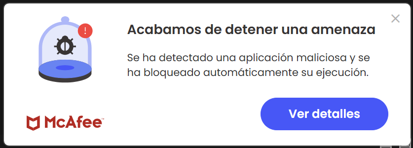
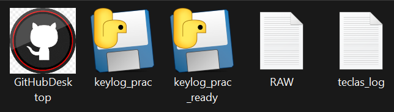

PRÁCTICA 2


¿Qué señales podrían indicar que un ejecutable aparentemente legítimo es sospechoso?
- Podría llamar la atención el color o la resolución del icono.
- Ubicación inusual del documento (carpeta, archivo...).
- Consumo anómalo de recursos, como ejecutarse aplicaciones o procesos en segundo plano.
¿Qué medidas técnicas pueden implementar las organizaciones para prevenir la ejecución de software no autorizado?
- Uso de antivirus contra enlaces fraudulentos, detectando aplicaciones maliciosas y bloqueándolas automáticamente.
¿Qué papel juega la ingeniería social en este tipo de ataques?
- Correos de phishing que simulan ser facturas, paquetería o recursos humanos.
- Mensajes urgentes que presionan a la víctima (“Tu cuenta será bloqueada”).
- Suplantación de identidad (hacerse pasar por soporte técnico o un superior).
¿Por qué el acceso físico a un equipo incrementa drásticamente el riesgo de compromiso?
Si puedes tocar el dispositivo físico, puedes acceder totalmente a él.
- Se pueden conectar dispositivos USB maliciosos.
- Se puede arrancar el equipo desde un sistema externo (Live USB).
- Se pueden intentar ataques para extraer o modificar el disco duro.
- Se pueden desactivar medidas de seguridad locales.
- Se pueden instalar keyloggers físicos.
Valora la dificultad de la práctica
- La práctica en general ha sido fácil, además contábamos con el código y explicación previa.
- No ha sido difícil seguir los pasos.